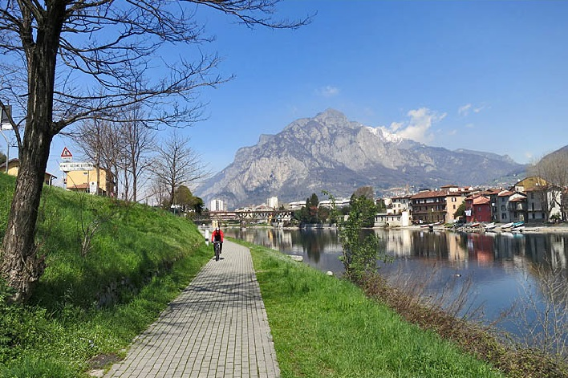

Giulia Andreotti
studentessa
Sono una ragazza neodicottenne che vive in un piccolo paese incastrato tra lago e montagna in provicia di Lecco. Sono molto detemrinata e mi considero perfezionista. Amo stare in mezzo alla gente, parlare di qualsiasi cosa e regalare sorrisi. Tendo a trovare il buono in ogni persona e credo nell'essere umano.
Education
- Quinto anno di liceo scientifco tradizionale
- @Istituto Superiore Lorenzo Rota, Calolziocorte (LC)
- Mi piacciono le materie scientifiche e specialmente come il loro insegnamento possa aprire la mente e faccia scoprire il mondo in modo più approfondito.
Languages
- Italiano (Native)
- Inglese (Professional)
- Francese (Beginner)
About me
Sono una studentessa e frequento l'ultimo anno del liceo scinetifico tradizionale. Sono ancora molto confusa riguardo il mio futuro e le mie scelte universitarie. Ho frequentato il quarto anno di liceo in Canada, dove sono riuscita a diplomarmi. E` stata un'esperienza formativa e interessante, la quale mi ha portata ad aprire gli occhi sul mondo e su quello che ci accade attorno ogni giorno. Mi piace stare in mezzo alla natura e credo che uscire all'aria aperta sia il modo migliore per eliminare lo stress. Spesso e volentieri mi sono sentita descritta "as a personable person". Sono molto ambiziosa e determinata e mi piace organizzare per filo e per segno ogni singola cosa che io debba fare, nonostante una parte di me ami l'avventura.
Passioni


